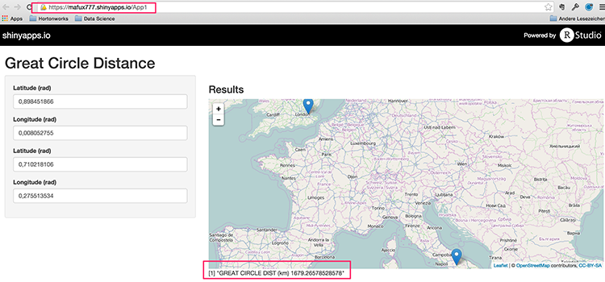

This is part of an assignment for the "Developing Data Products" class on Coursera.
The assignment was to create an interactive shiny application taking some user input, performing some calculation, and displaying the results.
mafux777
Student
This is part of an assignment for the "Developing Data Products" class on Coursera.
The assignment was to create an interactive shiny application taking some user input, performing some calculation, and displaying the results.
This application calculates the Great Circle Distance between two points on Earth. This is the shortest distance between two points on Earth and is often the chosen path for aircraft travelling between the two points.
Given origin and destination in radian coordinates (latitude $ \lambda $ and longitude $ \phi $), the Haversine formula for a perfect sphere looks like this:
\(2 r \arcsin\left(\sqrt{\sin^2\left(\frac{\phi_2 - \phi_1}{2}\right) + \cos(\phi_1) \cos(\phi_2)\sin^2\left(\frac{\lambda_2 - \lambda_1}{2}\right)}\right)\)
[https://en.wikipedia.org/wiki/Haversine_formula]
Hint: the Latex formula code is available in the Wikipedia article if you click on edit and look at the source code.
The Haversine formula does not take into account that the earth is elliptical, therefore I have implemented a more sophisticated algorithm described here ([http://www.r-bloggers.com/great-circle-distance-calculations-in-r/]).
If you want to check out the application with some coordinates and only have lat/lon in degrees, you can divide by 180 and multiply by $ \pi $.
Southern latitudes and western longitudes are designated as negative. For example, New York is 40°42′46″N 74°00′21″W, which would translate into $ \lambda = 0.71057 \; \phi = -1.29164 $
